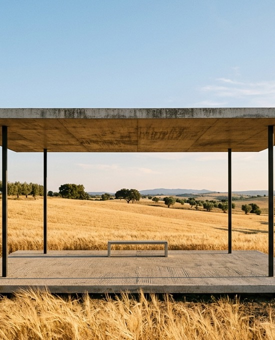
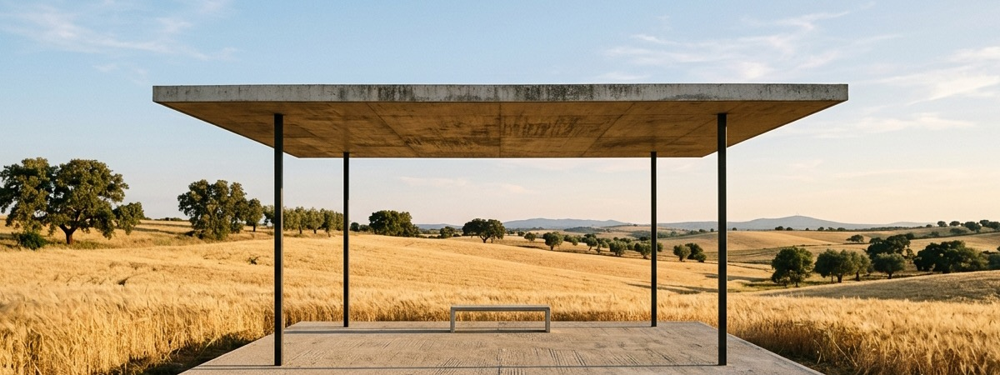

Pavilhão Sereno
A minimalist outdoor concrete pavilion with a thin slab roof and four slender columns, surrounded by golden wheat fields.

The pavilion resting on the Alentejo plain at late golden hour.
A horizon framed
by shelter.
Commissioned as an observational shelter in the vast, undulating agricultural grasslands of the Alentejo, Pavilhão Sereno investigates the absolute minimum intervention required to establish place within an infinite landscape. The project poses a singular tectonic question: how lightly can mass meet the earth while offering respite from the intense Iberian sun?
A paper-thin reinforced concrete canopy, cast with fine white aggregate, appears to float above the summer wheat. Four cylindrical blackened steel columns—placed at deliberate non-symmetrical intervals—anchor the roof to hidden bedrock footings, leaving the surrounding earth and natural vegetation undisturbed right up to the shadow line.
Underneath the canopy, the temperature immediately drops, and the eye is directed outward across the golden plains toward distant cork oaks. The pavilion does not impose a boundary on the land; rather, it provides a quiet frame through which the wind, light, and seasons can be witnessed with heightened clarity.

